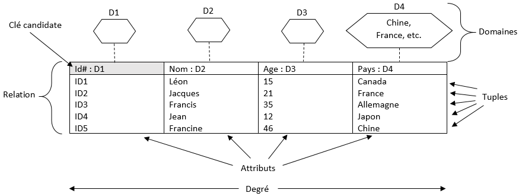

Question 4 : Comment peut-on produire de l'information à partir de données contenues dans une base ?
I. Les bases de données
Les organisations sont confrontées à une multitude de données provenant de sources diverses (systèmes d’information, sources externes, données ouvertes, objets intelligents connectés, etc.), qu’elles doivent gérer.
Les données sont principalement mémorisées dans des bases de données.
Les bases de données sont des systèmes de gestion de données qui permettent de stocker et de gérer de grandes quantités d'informations de manière structurée et efficace.
Une base de données met principalement en œuvre la fonction de mémorisation du système d'information, mais la façon dont elle est organisée conditionne également les fonctions d'acquisition et de transformation (pour produire de nouvelles informations).
II. Le modèle relationnel
Il existe plusieurs modèles d'organisation des bases de données, nous ne traiterons que du modèle relationnel qui permet de définir des bases de données relationnelles.
Une base de données relationnelle est une base de données où l'information est organisée dans des tableaux à deux dimensions appelés des relations ou tables, selon le modèle introduit par Edgar F. Codd en 1960.
Selon ce modèle relationnel, une base de données consiste en une ou plusieurs relations. Les lignes de ces relations sont appelées des enregistrements et les colonnes des attributs.
Les logiciels qui permettent de créer, utiliser et maintenir des bases de données relationnelles sont des systèmes de gestion de bases de données relationnelles (SGBDR).
Pratiquement tous les systèmes relationnels utilisent le langage SQL (Structured Query Language, en français : Langage de requêtes structurées) pour interroger et manipuler les bases de données.
A. Terminologie structurelle
Les éléments de base souvent référencés dans la modélisation relationnelle sont les domaines, les relations, les attributs, les enregistrements (ou tuples) et les degrés. La figure suivante illustre ces concepts :

Relation
Une relation rassemble des données caractérisant un même « objet » (au sens objet de l'information, ce peut-être une personne, une catégorie, un objet physique, un document...) sous la forme d'un tableau à deux dimensions.
Attention à ne pas confondre avec le concept de relation entre les tables.
Domaine
Chaque domaine a un type de données associé, qui définit le type d'informations qui peuvent être stockées dans le domaine. Par exemple, un domaine de type "texte" peut contenir du texte, tandis qu'un domaine de type "entier" ne peut contenir que des nombres entiers. Le type de données d'un domaine détermine également les opérations qui peuvent être effectuées sur les données contenues dans le domaine.
Enregistrement
Un enregistrement (tuples dans le schéma, uplets en français) représente une ligne de la table.
Attribut
Un attribut est une caractéristique ou une propriété d'un objet ou d'une entité qui peut être stockée dans une base de données. En d'autres termes, un attribut est une colonne d'une relation (table) qui contient des informations spécifiques sur un objet ou une entité (dans la figure précédente, les 4 attributs sont : Id, Nom, Age et Pays).
Degré
Le degré est le nombre d’attributs dans une relation (dans la figure ci-dessus, la relation est de degré 4).
Clé candidate
Une clé candidate est un ensemble de données (colonne(s)) permettant d’indexer chaque ligne d’une table donnée de manière différenciée. Parmi les clés candidates, on en désigne une comme étant la clé primaire de la table.
B. Cardinalité de relation
Le modèle relationnel prévoit trois types de relations entre tables : 1:1, 1:N et N:N. Les relations entre les tables sont définies dans la colonne partagée.
Relation 1:1
Dans deux tables A et B de relation 1:1, un enregistrement de la table A se rapporte seulement à un enregistrement de la table B, et inversement.
Par exemple, un ministre est à la tête d'un ministère et un ministère ne comporte qu'un seul ministre : la table « Ministères » est en relation 1:1 avec la table « Ministres ».
Relation 1:N
Dans deux tables A et B de relation 1:N, un enregistrement de la table A peut se rapporter à plusieurs enregistrements de la table B, et un enregistrement de la table B seulement à un enregistrement de la table A.
Par exemple, un seul membre de la table « Internats » peut se rapporter à plusieurs membres de la table « Élèves ».
Relation N:N
Dans deux tables A et B de relation N:N, un enregistrement de la table A peut se rapporter à plusieurs enregistrements de la table B et un enregistrement de la table B peut se rapporter à plusieurs enregistrements de la table A (une relation N:N peut donc être décomposées en deux relations 1:N).
Par exemple, dans une école secondaire, une classe a plusieurs professeurs et un professeur est responsable de plusieurs classes : les tables « Classes » et « Professeurs » sont en relation N:N.
C. Clé primaire
Une clé primaire est la donnée qui permet d'identifier de manière unique un enregistrement dans une table.
Cela induit 3 caractéristiques obligatoirement et simultanément réunies pour toute occurrence (enregistrement) de la relation :
- l'existence d'une valeur non vide pour cette clé primaire,
- l'unicité de cette valeur (aucune autre occurrence ne peut porter la même valeur de clé primaire),
- la stabilité de cette valeur, cette troisème caractéristique étant liée au fait que la clé primaire peut servir à établir le lien avec d'autres relations or si sa valeur change, le lien sera rompu.
Il y a une seule clé primaire par relation (mais elle peut-être constituée de plusieurs attributs, c'est leur ensemble qui forme la clé primaire d'une relation et leur ensemble de valeurs qui doit respecter les contraintes précédentes).
Il peut-être difficile de trouver un attribut ou groupe d'attributs respectant de façon certaine les trois contraintes d'une clé primaire pour toutes les occurrences possibles (passées ou à venir). Dans ce cas on crée généralement un nouvel attribut (numéro, code) destiné à être clé primaire, signifiant ou non (simple numéro auto-incrémenté).
D. Clé étrangère
Une clé étrangère est ainsi qualifiée car elle tire ses valeurs de la clé primaire d'une autre relation à laquelle elle fait référence. En ce sens :
- elle doit posséder le même type de données que sa clé primaire de référence,
- elle ne doit pas « créer » ses propres valeurs et ne peut que reprendre des valeurs pré-existantes de sa clé primaire de référence.
La mise en œuvre de ces deux contraintes sous un SGBDR, garantissant la cohérence de la base de données, se nomme la contrainte d'intégrité réfentielle.
Par contre, une clé étrangère pour toute occurrence de la relation n'est pas soumise aux trois contraintes essentielles d'une clé primaire :
- elle peut éventuellement être vide (Null), selon le contexte,
- elle peut ne pas être unique,
- elle peut ne pas être stable.
Une relation peut n'avoir aucune clé étrangère ou en avoir une à plusieurs, indépendantes les unes des autres.
E. Représentation d'une relation
Une relation peut être représentée ainsi :
Relation (attribut1, attribut2...)
Clé primaire : attribut1
Par convention, le nom de la relation commence par une majuscule et les attributs par une minuscule.
F. Dépendance fonctionnelle
En théorie des bases de données relationnelles, une dépendance fonctionnelle est une contrainte entre deux ensembles d'attributs dans une relation d'une base de données.
Dans une relation R, on dit qu'il y a dépendance fonctionnelle entre un ensemble d'attributs A et un ensemble d'attributs B, ou que l'ensemble A d'attributs détermine l'ensemble B d'attributs (et on écrit A→B) si quand deux enregistrements coïncident sur leurs attributs A, alors ils coïncident aussi sur leurs attributs B.
Exemple :
Considérons une relation (cours, heure, jour, salle).
| Cours | Heure | Jour | Salle |
|---|---|---|---|
| Maths | 10h | Lundi | 1 |
| Français | 10h | Lundi | 2 |
| Français | 16h | Mardi | 1 |
| Musique | 18h | Mercredi | 1 |
Nous avons {salle, jour, heure} → cours, parce que dans une salle à un moment donné il ne peut avoir lieu qu'un cours.
II. De l'information aux données
Les données sont les éléments de base constituant une information. Une donnée est la représentation d'une valeur sous une forme conventionnelle (par exemple JJ/MM/AAAA pour une date), destinée à facilité sa mémorisation et sa transformation (en de nouvelles informations).
B. Recensement des données nécessaires
Il convient de décomposer les données selon un niveau pertinent par rapport aux besoins futurs de transformation.
Exemple : Raphaël Dorol pourrait être une occurrence d'un attribut identité mais il semble plus pertinent de considérer que Raphaël est une occurrence d'une donnée prénom et Dorol une occurrence d'un attribut nom, permettant ensuite une exploitation séparée des noms et des prénoms.
Il est sous-jacent que les données recensées devront être acquises. Cependant certaines données peuvent être obtenues automatiquement par transformation d'autres données (données dites « calculées ») ce qui permettra d'économiser leur acquisition.
C. Le dictionnaire des données
À l'issue de ces étapes on peut établir un dictionnaire des données de la base :
| Attribut | Type de données de l'attribut | Commentaires |
|---|---|---|
| ... | ... | ... |
| ... | ... | ... |
Le choix du type de donnée permet d'optimiser les volumes mobilisés en stockage de la donnée et en mémoire lors de ses traitements. Les principaux types de données sont :
- le type alphanumérique (tous les caractères), en spécifiant généralement le nombre maximal de caractères,
- le type numérique (avec des sous-types : entier, réel...),
- le type date/heure (avec des sous-types : date seule, heure seule...)
- le type booléen (vrai/faux mis en œuvre généralement avec les valeurs 1/0 ou True/False).
Toute occurrence d'un attribut devra respecter une contrainte d'intégrité de domaine, c'est-à-dire présenter une valeur ayant le type requis par l'attribut.
V. SQL - Langage de définition des données
Le langage de définition des données permet d'agir sur la structure de la base, il s'agit entre autres de :
- créer des tables,
- les modifier (ajouter ou supprimer des champs et/ou des contraintes de clé),
- les supprimer.
A. Les types de données
Les principaux types de données sont pris en charge par les SGBDR, avec de nombreux sous-types.
B. La création de tables
La syntaxe de création d'une table est la suivante :
1.CREATE TABLEnom_table2.(creer_definition, ...)3. 4.creer_definition: { 5.nom_colonne type_de_donnees[NOTNULL|NULL][AUTO_INCREMENT][PRIMARY KEY]6.| [CONSTRAINTnom_contrainte]PRIMARY KEY(champ_cle_primaire, ...) ...7.| [CONSTRAINTnom_contrainte]FOREIGN KEY(nom_colonne, ...)definition_reference8. } 9. 10.definition_reference: { 11.REFERENCESnom_table(nom_colonne, ...)12. }
- On commence par utiliser l'instruction CREATE TABLE suivi du nom de la table à créer ;
- La 2ème ligne signifie que l'on peut ensuite ajouter un à plusieurs champs ou contraintes de clé, dans une paire de parenthèses et séparés par des virgules ;
- Chaque création d'une définition de colonne (création d'un champ ou d'une contrainte de clé) devra respecter la syntaxe définie dans "creer_definition" ;
- Une colonne peut être définie en indiquant son nom suivi de son type. Les crochets "[]" servent à délimiter les éléments facultatifs. Un champ peut éventuellement être déclaré null ("absence" de valeur toléré) ou (signification de la barre verticale "|") non-null, auto-incrémenté ou encore clé primaire ;
-
La ligne 6 permet de définir la clé primaire de la table. On utilise l'instruction PRIMARY KEY suivie entre parenthèses du ou des champs (préalablement définis) constituant la clé primaire.Le caractère "|" signifie "ou" : chaque définition de colonne (creer_definition) est soit une création de champ, soit une déclaration de contrainte de clé (primaire ou étrangère).L'instruction CONSTRAINT sert à nommer la contrainte. Un nom sera automatiquement généré si l'instruction est omise (afin de pouvoir modifier ou supprimer la contrainte ultérieurement) ;
- La ligne 7 permet d'ajouter une clé étrangère à la table. On utilise l'instruction FOREIGN KEY suivie entre parenthèses du ou des champs (préalablement définis) constituant la clé étrangère, puis de la définition de la référence (voir ligne 11) ;
- Fin de la syntaxe de création d'une définition de colonne ;
- Début de la syntaxe de la définition d'une référence ;
- La clé étrangère tirant ses valeurs d'une autre table, on utilise l'instruction REFERENCES suivie du nom de la table source puis, entres parenthèses, du ou des champs référencés, dans le bon ordre.
Exemples :
Considérons le schéma relationnel suivant :
Service (num, libelle, budget)
clé primaire : num (auto-incrémenté)
Qualification (num, libelle, niveau)
clé primaire : num (auto-incrémenté)
Salarie (num, nom, prenom, dateEmbauche, salaire, indemnite, poste, numService)
clé primaire : num (auto-incrémenté)
clé étrangère : num_service en référence à num de la relation service
Competence (numSalarie, numQualif, dateAcq)
clé primaire : numSalarie, numQualif
clés étrangères :
- numSalarie en référence à num de la relation Salarie
- numQualif en référence à num de la relation Qualification
Essayez d'écrire vous même le code en utilisant par exemple cette éditeur en ligne W3Schools. Ceci n'est pas un SGBDR mais permet de tester le langage SQL facilement.
Voici les requêtes de création de table correspondantes :
CREATE TABLEService(numINTAUTO_INCREMENT,libelleVARCHAR(20)NOTNULL,budgetFLOAT,PRIMARY KEY(num) );
num n'a pas été explicitement spécifié NOT NULL puisqu'il l'est de fait en étant clé primaire.
Le paramètre AUTO_INCREMENT, associé à un entier, s'écrit différemment selon les SGBDR.
Le libellé du service ne pourra pas dépasser 20 caractères (espaces inclus).
CREATE TABLEQualification(numINTAUTO_INCREMENT,libelleVARCHAR(20)NOTNULL,niveauVARCHAR(1)NOTNULL,PRIMARY KEY(num) );
CREATE TABLESalarie(numINTAUTO_INCREMENT,nomVARCHAR(25)NOTNULL,prenomVARCHAR(25)NOTNULL,dateEmbaucheDATENOTNULL,salaireFLOAT,numServiceINT,PRIMARY KEY(num),FOREIGN KEY(numService)REFERENCESService(num) );
CREATE TABLECompetence(numSalarieINT,numQualifINT,dateAcqDATENOTNULL,PRIMARY KEY(numSalarie,numQualif),FOREIGN KEY(numSalarie)REFERENCESSalarie(num),FOREIGN KEY(numQualif)REFERENCESQualification(num) );
C. La suppression d'une table
La suppression d'une table supprime également de manière irréversible son contenu :
DROP TABLEnom_table
D. La modification de la structure d'une table
La syntaxe de modification d'une table est la suivante :
1.ALTER TABLEnom_table2.option_alteration[,option_alteration...]3. 4.option_alteration: { 5.ADDnom_colonne type_de_donnees[NOTNULL|NULL][AUTO_INCREMENT][PRIMARY KEY]6.|ADD(nom_colonne type_de_donnees[NOTNULL|NULL][AUTO_INCREMENT][PRIMARY KEY], ...)7.|ADD[CONSTRAINTnom_contrainte]PRIMARY KEY(champ_cle_primaire, ...)8.|ADD[CONSTRAINTnom_contrainte]FOREIGN KEY(nom_colonne, ...)definition_reference9.|DROPnom_colonne10.|DROP PRIMARY KEY11.|DROP FOREIGN KEYnom_contrainte12. } 13. 14.definition_reference: { 15.REFERENCESnom_table(nom_colonne, ...)16. }
- L'instruction ALTER TABLE permet d'ajouter ou de supprimer une colonne ou une contrainte de clé, de la table nom_table ;
- Plusieurs modifications de la structure de la table peuvent être indiquées en les séparant par une virgule ;
- Ajout d'un champ avec l'instruction ADD, la colonne est ensuite définie de la même manière que pour la création de table ;
- Ajout de plusieurs champs, ceux-ci doivent être entres parenthèses et séparés par des virgules ;
- et 8. Ajout d'une contrainte de clé (primaire et étrangère respectivement) ;
- Suppression d'un champ ;
- Suppression de la clé primaire ;
- Suppression d'une clé étrangère.
VI. SQL - Langage de manipulation des données
Le langage de manipulation des données permet la modification du contenu d'une table selon trois actions :
- insérer un à plusieurs nouveaux enregistrements dans la table,
- mettre à jour les valeurs d'un à plusieurs champs d'un ou plusieurs enregistrement de la table,
- supprimer un à plusieurs enregistrements de la table.
A. L'insertion d'enregistrements
L'ajout d'enregistrement dans une table passe par l'instruction suivante :
1.INSERT INTOnom_table2.[(nom_colonne[,nom_colonne] ...)]3.VALUES(valeur[,valeur] ...) [, (valeur[,valeur] ...)] ...
- On indique la table dans laquelle on souhaite insérer des données après l'instruction INSERT INTO ;
- La 2ème ligne est facultative. Elle permet de spécifier dans quelle(s) colonne(s) on souhaite insérer des données, ce qui implique de fournir une valeur pour chaque colonne nommée (effectué en ligne 3) ;
- C'est dans cette ligne que l'on spécifie les données à insérer dans la table. Si la 2ème ligne est omise, une valeur doit être fournie pour chaque champ que contient la table. Plusieurs enregistrements peuvent être insérés en même temps en les séparant par une virgule.
Exemple : Insérons deux salariés dans la relation suivante :
Salarie (num, nom, prenom, date_embauche, salaire, poste)
num est auto-incrémenté et non-null.
INSERT INTOSalarieVALUES(NULL,'Arist','Léa','2003-08-05',1630.41,'Logisticienne'),(NULL,'Lakab','Karim','2011-12-22', ,'Ingénieur informatique');
Assigner la valeur null à un champ non-null et auto-incrémenté revient à assigner la valeur : plus haute valeur de la colonne (num le plus grand dans l'exemple) + 1, ou 1 si c'est le premier enregistrement de la table.
Une autre manière (notamment si le champ peut être null) de laisser le système gérer la séquence de nombre est d'assigner au champ la valeur zéro.
La partie décimale du salaire est notée à l'aide d'un point puisque la virgule sert de séparateur des valeurs insérées.
Le salaire du deuxième salarié n'a pas encore été déterminé d'où l'absence de valeur entre les deux virgules correspondant à ce champ. Par conséquent, l'insertion du deuxième salarié aurait pu aussi se faire en spécifiant les colonnes insérées (sans le salaire, ni le num car il est auto-incrémenté) :
INSERT INTOSalarie(nom,prenom,dateEmbauche,poste)VALUES('Lakab','Karim','2011-12-22','Ingénieur informatique');
B. La mise à jour de champs d'enregistrements
La modification de données consiste à mettre à jour les valeurs d'un à plusieurs champs d'un à plusieurs enregistrements d'une table :
- cette table est désignée par l'instruction UPDATE,
- la ou les modification(s) à effectuer sont précisée(s) dans la clause SET en affectant (=) sa nouvelle valeur à chaque champ mis à jour (cette nouvelle valeur peut éventuellement être issue d'un calcul ou d'une sous-requête d'interrogation),
- les enregistrements concernés par ces mises à jour peuvent être limités à l'aide de critères de restriction portés par la clause WHERE (voir partie VII) ; en l'absence de telles restrictions, tous les enregistrements sont concernés.
Syntaxe :
1.UPDATEnom_table2.SETnom_colonne=valeur[,nom_colonne=valeur] ...3.[WHEREcondition_where]
- Afin de mettre à jour les données d'une table, on utilise l'instruction UPDATE, suivie du nom de la table en question ;
- Il faut ensuite renseigner dans la clause SET, quelle(s) valeur(s) assigner ou affecter (=) à telle(s) champ(s) ;
- La clause facultative WHERE est vue dans la partie VII. En son absence, la mise à jour de valeurs affecte tous les enregistrements de la table.
Exemple 1 : Tous les salariés bénéficient d'une augmentation forfaitaire de 12€ :
UPDATESalarieSETsalaire=salaire+12;
Si le salaire de Karim est encore à null lors de l'exécution de cette requête, il le restera (null + 12 donne null).
Exemple 2 : Léa Arist (salarié n°29) est désormais responsable commerciale :
UPDATESalarieSETposte="Responsable commerciale"WHEREnum=29;
On opère la restriction sur la salariée par sa clé primaire, du fait qu'elle lui est unique.
C. La suppression d'enregistrements
La suppression (irréversible) d'enregistrements :
- se fait grâce à l'instruction DELETE sur une table spécifiée par la clause FROM,
- les enregistrements concernés par cette suppression peuvent être limités à l'aide de critères de restriction portés par la clause WHERE ; en l'absence de telles restrictions, tous les enregistrements de la table sont concernés.
Syntaxe :
DELETE FROMnom_table[WHEREcondition_where]
Exemple : Dans une relation Commande (num, date, numClient), la commande n°2476 a été annulée, elle peut donc être supprimée :
DELETE FROMCommandeWHEREnum=2476;
D. Une mise en perspective
On notera que la saisie directe de requêtes SQL de manipulation n'a pas lieu d'être hors tâches d'administration de la base. Dans la plupart du temps ces requêtes sont insérées dans des programmes et leurs différentes valeurs (insérées, mises à jour) sont apportées par le programme à partir de différentes sources (traitement, formulaires...).
VII. Critères de restriction
Les restrictions consistent à restreindre la portée de certaines requêtes aux seuls enregistrements respectant ces critères. La clause WHERE est le premier critère utilisé.
Des critères de restriction peuvent être utilisés par des requêtes :
- d'interrogation (SELECT) : ils peuvent alors porter sur une à plusieurs tables (avec des critères de jointure),
- de mise à jour (UPDATE) et de suppression (DELETE) pour déterminer quels sont les enregistrements d'une table concernés par ces manipulations.
Un critère de restriction associe généralement une expression liée aux champs, à une ou des valeurs définies. La mise en relation de ces expressions avec ces valeurs se fait au moyen :
- d'opérateur de comparaison : =, >, <, >=, <=, <> (différent de ; dans certaines versions SQL, il est noté !=) ;
- d'opérateurs SQL :
- BETWEEN : qui sélectionne des valeurs dans une plage donnée ; les valeurs peuvent être des nombres, du texte ou des dates ; l'opérateur est inclusif, les valeurs données sont incluses dans la requête,
- LIKE : permettant de faire des recherches en utilisant des "jokers", c'est-à-dire des caractères qui représentent n'importe quel caractère ('&' représente n'importe quelle chaîne de caractères, quelle que soit sa longueur et '_' représente un seul caractère, voir exemples plus bas),
- IN : qui permet de restreindre des valeurs (à placer entre parenthèses), il raccourci l'utilisation de multiples conditions OR.
- NOT : opérateur de négation,
- AND et OR servent à filtrer des enregistrements basés sur plus d'une condition :
- l'opérateur AND renvoie des enregistrements si toutes les conditions qu'il sépare sont vraies,
- l'opérateur OR renvoie des enregistrements si une des conditions qu'il sépare est vraie.
Illustrons ces opérateurs par des exemples :
Nous ne présenterons les requêtes exemples qu'à partir de la clause WHERE puisque la syntaxe y est commune aux trois types de requêtes concernées.
La relation exemple est :
Salarie (num, nom, prenom, dateNaissance, dateEmbauche, salaire, poste)
Exemple 1 : Requête restreinte aux salariés qui occupent le poste « Commercial » :
WHEREposte="Commercial";
Exemple 2 : Requête restreinte aux salariés ayant un salaire d'au moins 2 000€ :
WHEREsalaire>=2000;
Exemple 3 : Requête restreinte aux salariés occupant le poste « Commercial » et ayant un salaire inférieur à 2 000€ :
WHEREposte="Commercial"ANDsalaire<2000;
Exemple 4 : Requête restreinte aux salariés occupant le poste « Commercial » ou ayant un salaire inférieur à 2 000€ :
WHEREposte="Commercial"ORsalaire<2000;
Exemple 5 : Requête restreinte aux salariés embauchés avant 2004 :
WHEREdateEmbauche<"2004-01-01";
Exemple 6 : Requête restreinte aux salariés dont le salaire est compris entre 1 000 et 2 000€ (inclus) :
WHEREsalaireBETWEEN1000AND2000;ou (ceci est une zone de commentaire)WHEREsalaire>=1000ANDsalaire<=2000;
Exemple 7 : Requête restreinte aux salariés embauchés en 2012 :
WHEREdateEmbaucheBETWEEN"2012-01-01"AND"2012-12-31";ou (la fonction YEAR extrait l'année d'une date, elle ne fait pas partie des normes SQL et n'est pas prise en charge par tous les SGBDR)WHEREYEAR(dateEmbauche)=2012;ou encoreWHEREdateEmbauche>="2012-01-01"ANDdateEmbauche<="2012-12-31";
Exemple 8 : Requête restreinte aux salariés occupant le poste « Commercial » ou « Ingénieur » :
WHEREposteIN("Commercial","Ingénieur");ouWHEREposte="Commercial"ORposte="Ingénieur";
Exemple 9 : Requête restreinte aux salariés dont le nom commence par un "M" :
WHEREnomLIKE"M%";
Exemple 10 : Requête restreinte aux salariés dont l'avant dernier caractère du prénom n'est pas un "z" :
WHEREprenomNOT LIKE"%z_";
Exemple 11 : Requête restreinte aux salariés qui n'ont pas été embauché en 2007 :
WHEREdateEmbaucheNOT BETWEEN'2007-01-01'AND'2007-12-31';ouWHEREYEAR(dateEmbauche)<>2007;ou encoreWHEREdateEmbauche<'2007-01-01'ORdateEmbauche>'2007-12-31';
Exemple 12 : Requête restreinte aux salariés qui n'occupent ni un poste de « Commercial » ni un poste d'« Ingénieur » :
WHEREposteNOTIN("Commercial","Ingénieur");ouWHEREposte<>"Commercial"ANDposte<>"Ingénieur";
Exemple 13 : Requête restreinte aux commerciaux dont le salaire est supérieur à 2 000€, ou aux ingénieurs (peu importe leur salaire) :
WHERE(poste="Commercial"ANDsalaire>2000)ORposte="Ingénieur";
Exemple 14 : Requête restreinte aux commerciaux ou aux ingénieurs dont le salaire (aux deux) est supérieur à 2 000€ :
WHEREposteIN("Commercial","Ingénieur")ANDsalaire>2000;
VIII. SQL - Langage d'interrogation des données - 1
Le principal intérêt d'une base de données réside dans son exploitation : les données sont mémorisées dans le but d'être extraites, par des requêtes d'interrogation, notamment pour les transformer en de nouvelles informations.
A. La projection
La projection est l'opération qui consiste à délivrer des données. Le plus souvent, les requêtes sont exécutées par des programmes pour un affichage ou un traitement.
Exemple : La projection d'une donnée « sexe » délivre les valeurs « F » et « M » qui ne seront pas forcément affichées telles quelles, mais qui peuvent être utilisées pour personnaliser un affichage (« Chère » ou « Cher »).
L'instruction SELECT est utilisée pour retrouver des lignes d'une ou plusieurs tables.
Voici la syntaxe d'une requête SELECT :
SELECTnom_colonne[,nom_colonne] ...FROMnom_table[,nom_table] ...[WHEREcondition_where]
En l'absence de clause WHERE, tous les enregistrements (lignes) sont projetés.
Syntaxe pour avoir directement tous les champs (colonnes) projetés :
SELECT*FROMnom_table[,nom_table] ...
Exemples :
Utilisons la relation :
Salarie (num, nom, prenom, dateEmbauche, salaire, indemnite, poste)
Exemple 1 : Liste des salariés avec leur nom et prénom :
SELECTnom,prenomFROMSalarie;
Exemple 2 : Liste des libellés de postes de l'organisation :
SELECTposteFROMSalarie;
Un poste sera projeté par salarié, même si plusieurs salariés occupent le même, ce qui est peu pertinent.
SELECT DISTINCTposteFROMSalarie;
Seuls les enregistrements différents sur le(s) champ(s) demandé(s) seront projetés grâce à la clause DISTINCT.
Exemple 3 : Liste des salariés avec leur rémunération (noms des colonnes : "nom", "prenom", "salaire + indemnite") :
SELECTnom,prenom,salaire+indemniteFROMSalarie;
La rémunération est une donnée calculée.
B. Les tris
Les enregistrements projetés ne sont pas triés par défaut. On peut spécifier des critères hiérarchisés de tri grâce à la clause facultative ORDER BY.
Syntaxe :
SELECTnom_colonne[,nom_colonne] ...FROMnom_table[,nom_table] ...[WHEREcondition_where][ORDER BYnom_colonne[ASC|DESC], ...]
Les tris ont lieu selon l'ordre spécifié dans la clause ORDER BY. Pour chaque critère de tri, le classement peut être ascendant (ASC par défaut si non spécifié) ou descendant (DESC à spécifier).
Exemples :
Exemple 4 : Liste alphabétique des salariés :
SELECTnom,prenomFROMSalarieORDER BYnomASC,prenomASC;
ASC est falculatif ("...ORDER BY nom, prenom" est identique).
Exemple 5 : Liste des salariés triés par salaires décroissants :
SELECTnom,prenomFROMSalarieORDER BYsalaireDESC;
Un champ figurant dans la clause ORDER BY ne figure pas forcément dans l'instruction SELECT.
Exemple 6 : Liste des salariés triés par rémunération décroissante, celle-ci étant projetée :
SELECTnom,prenom,salaire+indemniteASremunerationFROMSalarieORDER BYremunerationDESC;
La clause AS (dans l'instruction SELECT) permet de définir un alias (nommage) réutilisable.
À noter que les critères de restrictions (WHERE, partie VII) prennent place avant la clause ORDER BY.
C. Les jointures
Les jointures permettent d'exploiter pleinement le modèle relationnel des tables d'une base de données. Elles sont faites pour mettre en relation des tables concourant à rechercher la réponse à des interrogations. Une jointure permet donc de combiner les colonnes (champs) de plusieurs tables. Les jointures entre tables s'effectuent en imposant l'égalité des valeurs d'une colonne d'une table à une colonne d'une autre table (on parle alors de jointure naturelle).
Exemple :
Considérons le schéma relationnel suivant :
Service (num, libelle, budget)
clé primaire : num (auto-incrémenté)
Salarie (num, nom, prenom, dateEmbauche, salaire, numService)
clé primaire : num (auto-incrémenté)
clé étrangère : numService en référence à num de la relation Service
Exemple : Liste alphabétique des salariés (toutes les données) avec le libellé de leur service :
SELECTSalarie.*,libelleFROMSalarie,ServiceORDER BYnom,prenom;
En l'absence de jointure, le SGBDR ne « sait » pas comment associer les tables et projette pour chaque ligne de la première table, l'ensemble des lignes de la seconde. Si les tables Service et Salarie comporte respectivement 5 et 10 enregistrements, 50 seront projetés (au lieu des 10 souhaités).
Salarie.* signifie que l'on souhaite afficher tous les champs de la table Salarie. Il s'agit d'un préfixage, ici obligatoire car les tables interrogées (clause FROM) possèdent un champ homonyme.
SELECTSalarie.*,libelleFROMSalarie,ServiceWHEREService.num=Salarie.numService;
Le critère de jointure associe la clé primaire num de la table Service à la clé étrangère numService de la table Salarie qui lui fait référence.
D. La clause FROM
La clause FROM énumère les tables dont au moins un champ est projeté ou nécessaire à un critère de restriction ou de jointure (certaines tables peuvent n'être qu'un intermédiaire pour établir des jointures entre toutes les tables).
E. Une mise en perspective
Le développeur doit optimiser les temps d'exécution des requêtes en exécutant les critères de restriction avant les jointures (exécutées avant, elles prendraient du temps à mettre en relation des enregistrements dont une partie seraient ensuite éliminée par les restrictions).
IX. SQL - Langage d'interrogation des données - 2
A. Les fonctions d'agrégat
Nous avons vu qu'il était possible d'introduire des calculs dans l'instruction SELECT ou dans les clauses WHERE ou ORDER BY mais il s'agit alors de calculs répétés de manière indépendante pour chaque enregistrement (calcul « en ligne »). Une opération est au contraire réalisée en colonne et concerne simultanément tous les enregistrements d'un champ.
| Fonction d'agrégat SQL | Description |
|---|---|
| SUM (...) | Retourne la somme des valeurs de données d'un champ de type numérique ou date/heure |
| AVG (...) | Retourne la moyenne des valeurs de données d'un champ de type numérique ou date/heure |
| COUNT (...) | Retourne le nombre de lignes (enregistrements) d'une sélection |
| MIN (...) | Retourne la plus petite valeur de données d'un champ de type numérique ou date/heure |
| MAX (...) | Retourne la plus grande valeur de données d'un champ de type numérique ou date/heure |
Une opération d'agrégat effectuée dans l'instruction SELECT délivrera un seul enregistrement-résultat, la clause ORDER BY n'a donc pas lieu d'être. Par contre, une telle requête peut faire appel à des critères de restriction et de jointure.
Exemple :
Utilisons la relation suivante :
Salarie (num, nom, prenom, dateEmbauche, salaire, indemnite, poste)
Exemple 1 : Le salaire moyen des salariés de l'organisation :
SELECTAVG(salaire)FROMSalarie;
Le résultat de la requête consistera en un seul enregistrement d'une seule valeur, la moyenne de tous les salaires.
Exemple 2 : Les salaires extrêmes de l'organisation :
SELECTMIN(salaire),MAX(salaire)FROMSalarie;
Le résultat de la requête consistera en un seul enregistrement comportant deux valeurs.
Exemple 3 : La date d'embauche de l'« ingénieur » ayant le plus d'ancienneté :
SELECTMIN(dateEmbauche)FROMSalarieWHEREposte="Ingénieur";
Exemple 4 : Le total des indemnités versées :
SELECTSUM(indemnite)FROMSalarie;
Exemple 5 : Le total des rémunérations versées :
SELECTSUM(salaire)+SUM(indemnite)ouSELECTSUM(salaire+indemnite)FROMSalarie;
Exemple 6 : Le nombre de salariés :
SELECTCOUNT(num)FROMSalarie;ouSELECTCOUNT(*)FROMSalarie;
Exemple 7 : Le nombre de postes différents (distincts, qu'occupent les salariés) :
SELECTCOUNT(DISTINCTposte)FROMSalarie;
Le mot-clé DISTINCT permet de ne compter qu'une fois les postes occupés par plusieurs salariés.
B. Le regroupement des résultats
Les opérations présentées auparavant et exécutées dans l'instruction SELECT délivraient un seul enregistrement-résultat. La clause GROUP BY permet d'effectuer des opérations par sous-groupes d'enregistrements, délivrant ainsi plusieurs enregistrements-résultat (un pour chaque sous-groupe d'enregistrements). La clause ORDER BY retrouve ici sa raison d'être. Les critères de restriction et de jointure peuvent toujours être présents.
Exemples :
Considérons le schéma relationnel suivant :
Service (num, libelle, budget)
clé primaire : num (auto-incrémenté)
Qualification (num, libelle, niveau)
clé primaire : num (auto-incrémenté)
Salarie (num, nom, prenom, dateEmbauche, salaire, indemnite, poste, numService)
clé primaire : num (auto-incrémenté)
clé étrangère : numService en référence à num de la relation Service
Competence (numSalarie, numQualif, dateAcq)
clé primaire : numSalarie, numQualif
clés étrangères :
- numSalarie en référence à num de la relation Salarie,
- numQualif en référence à num de la relation Qualification
Exemple 1 : Le montant des salaires de chaque service :
SELECTlibelle,SUM(salaire)FROMService,SalarieWHEREService.num=Salarie.numServiceGROUP BYlibelle;
Tous les salaires de salariés d'un même service seront totalisés ; il y aura autant d'enregistrements-résultat que de services.
Exemple 2 : Le nombre de qualifications possédées par chaque salarié :
SELECTnom,COUNT(*)FROMSalarie,CompetenceWHERESalarie.num=Competence.numSalarieGROUP BYnum,nom;
Le regroupement par numéro (clé primaire) assure que la requête traitera chaque enregistrement ; tous les champs figurant dans SELECT doivent être placés dans GROUP BY, qui peut porter des champs supplémentaires.
Exemple 3 : Le salaire moyen par service, sauf direction, par ordre décroissant :
SELECTService.libelle,AVG(salaire)ASmoyenneSalaireServiceFROMService,SalarieWHEREService.num=Salarie.numServiceANDService.libelle<>"Direction"GROUP BYService.num,Service.libelleORDER BYmoyenneSalaireServiceDESC;
C. Les restrictions d'affichage des résultats
La clause HAVING permet une restriction d'affichage sur les résultats d'une opération avec regroupement. Cette restriction intervient après l'exécution de l'opération. Elle ne doit pas être confondue avec la clause WHERE qui restreint les enregistrements auxquels doit s'appliquer l'opération et qui intervient donc avant.
Exemple 4 : Les services comptant au moins 4 salariés :
SELECTService.libelle,COUNT(*)FROMService,SalarieWHEREService.num=Salarie.numServiceGROUP BYService.num,Service.libelleHAVINGCOUNT(*)>=4;
Exemple 5 : Le salaire moyen des services pour lesquels ce salaire moyen n'excède pas 2 000€ :
SELECTService.libelle,AVG(salaire)ASsalMoyFROMService,SalarieWHEREService.num=Salarie.numServiceGROUP BYService.num,Service.libelleHAVINGsalMoy<=2000;
X. Les bases de données multi-utilisateurs
A. Les utilisateurs
Les bases de données comptent souvent plusieurs utilisateurs, notamment lorsqu'elles sont partagées (par exemple entre les acteurs d'un processus). Ces utilisateurs ont des besoins différents.
Pour des raisons de sécurité des données, de responsabilisation des acteurs, de traçabilité des actions, il est possible et souhaitable de mettre en place un contrôle d'accès aux données.
Les risques portant sur les données sont :
- la suppression ou la modification de données (accidentelle ou malveillante) pouvant provoquer des dysfonctionnements du système d'information et donc de l'organisation,
- le vol de données confidentielles (mettant en péril la compétitivité ou l'image de l'organisation).
Il s'agit d'attribuer à chaque utilisateur des droits d'accès (ou privilèges) ne correspondant qu'à ses besoins. L'attribution à une personne d'un compte d'utilisateur, associé àà un profil de droits est un choix organisationnel effectué conjointement par le gestionnaire du SI et les responsables métiers.
En pratique, on crée des profils d'utilisateurs définissant les acteurs par leur rôle organisationnel (comme dans les processus) et leurs attribuant des droits. Les utilisateurs sont des personnes physiques identifiées qu'on associe à un profil d'utilisateurs (plusieurs utilisateurs peuvent avoir le même profil).
À ces notions de droits s'ajoutent des considérations « techniques » que nous n'étudierons pas ici : partage en réseau, gestion des accès simultanés...
Il existe trois catégories de profils d'utilisateurs :
- administrateur :
- l'administrateur du SGBDR possède tous les droits,
- l'administrateur d'une base de données hébergée par le SGBDR, possède tous les droits sur cette base ;
- utilisateur final dont les droits doivent être limités aux besoins ; il peut exister plusieurs profils d'utilisateur final, chacun d'eux pouvant être associés à plusieurs personnes physiques ;
- développeur dont les droits sont aussi limités aux besoins (généralement plus étendus que ceux d'un utilisateur final) ; là aussi plusieurs profils peuvent coexister et être associés à plusieurs personnes physiques.
B. Les droits sur les bases de données
Les droits d'accès définissent ce que l'utilisateur a le droit de faire sur une base de données (tout ce qui ne lui est pas autorisé explicitement lui est interdit), via l'application. Ils peuvent porter sur plusieurs domaines (on indique entre parenthèses l'instruction correspondante) :
- l'exploitation des données :
- consultation d'enregistrements (SELECT),
- ajout d'enregistrements (INSERT INTO),
- mise à jour d'enregistrements (UPDATE),
- suppression d'enregistrements (DELETE),
- la structure de la base de données :
- création de tables ou de vues (CREATE),
- modification de tables ou de vues (ALTER),
- suppression de tables ou de vues (DROP),
- l'administration des droits :
- création de droits (GRANT),
- révocation de droits (REVOKE).
C. Une mise en perspective
L'utilisateur final n'accède pas directement à la base de données, il le fait par l'intermédiaire d'une application métier et de ses interfaces (qui lui évite de saisir du SQL !). Pour lui, l'accès est transparent, on pourrait même dire que l'application est l'« utilisateur » de la base de données puisque c'est elle qui s'y connecte et transmet des requêtes SQL.
Il est donc de la responsabilité des développeurs que l'application ne permette à un utilisateur de n'exécuter que les actions (et les répercussions sur la base de données) dont il a besoin, ce besoin étant défini d'un point de vue organisationnel.
Toutefois, il est quand même prudent de « doubler » ce contrôle au niveau de l'application, par un contrôle au niveau des données, pour parer à certaines attaques. Ainsi l'application se connectera à la base de données avec un profil d'utilisateur, enregistré dans le SGBDR, ne comportant que les droits nécessaires (si un pirate parvient à s'emparer de ce profil, sa capacité de nuisance sera limitée).